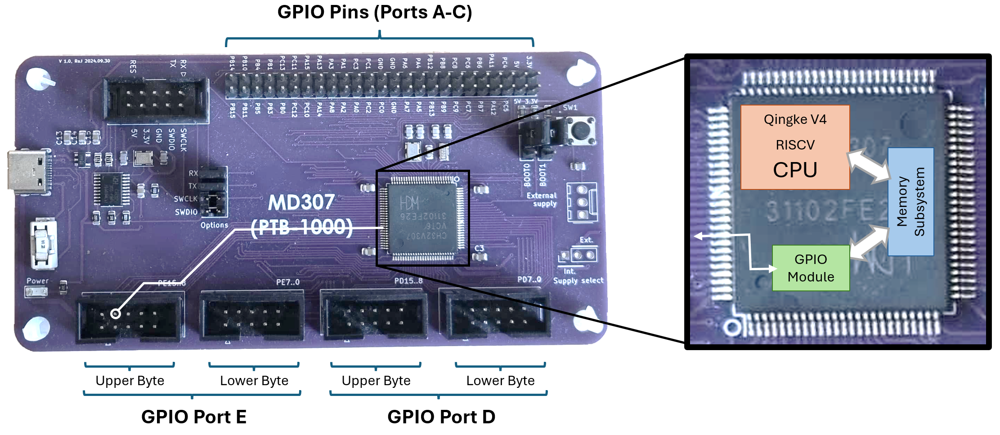
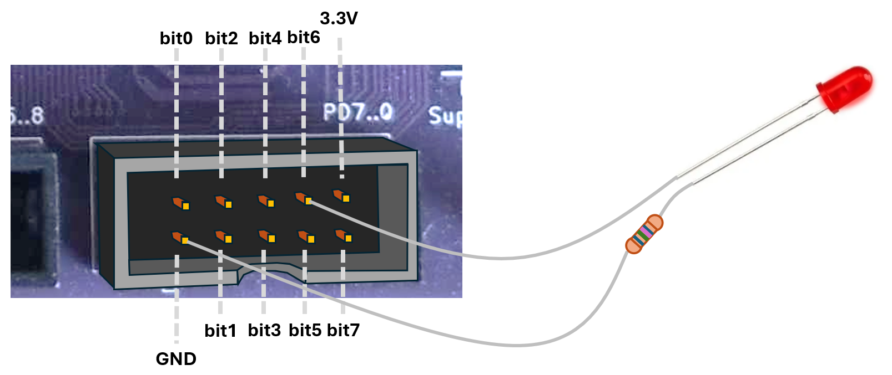
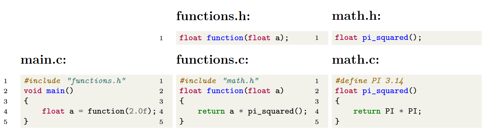
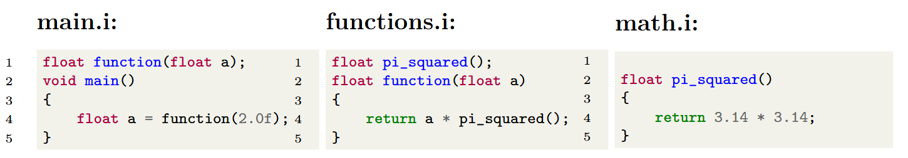
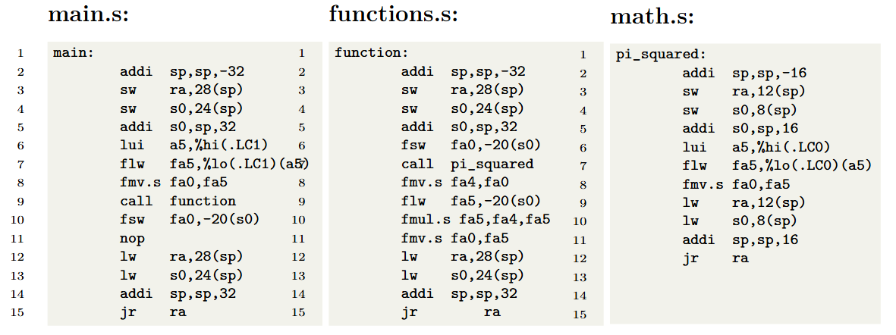

So far, we have focused on the core of our processor, the Qingke V4F, and how to move data between memory and registers. This would be quite pointless unless the processor was connected to the outside world somehow. Today we will start introducing how to communicate with off-chip devices using the GPIO ports.
We will also start looking at the programming language C, which we will start using to program our machine. You know the basics of the RISC-V assembly language now, and you have probably noticed that it quickly becomes impractical for larger programs. Throughout the rest of the course, we will switch over to the (relatively) high-level language C, but we will keep showing you how C is compiled into assembly language. Understanding how a high-level language gets translated to assembly, and then machine code, is very important for writing performant and secure code, on any machine.
A processor chip talks to the outside world through its tiny metal legs, called pins. In desktop and laptop computers, most of these pins are already spoken for - they connect directly to memory (so you can plug in RAM) or to standard buses like PCI Express (so you can add devices like graphics cards). Microcontrollers, however, are much simpler. They often don’t have separate memory chips or standard expansion slots, so most of their pins can be used more flexibly as General Purpose Input/Output (GPIO) 1.
By allowing the processor to directly read or control the logical status of these pins, they can be connected to almost anything, as long as the software drives them with the right values at the right time. In this course, you will go from connecting a single pin to an LED to make it turn on and off, to communicating with an ASCII display via a number of pins. In theory, there is nothing stopping you from connecting some of the pins to an HDMI cable, to drive a monitor, or to a bunch of motors, to drive a radio-controlled car.

The picture above illustrates how the processor chip is connected to the GPIO pins on the MD307. If you look close enough (and turn the board over at times) you can follow a very thin wire from most of the CH32V307’s tiny pins to one of the more accessible pins on the top of the board. On this microcontroller, the pins are divided into 16-bit ports, labeled A-E. On the bottom of the board, you can see that the pins that make up the ports labeled E and D are also available in a nice little connector layout, that allows us to connect peripheral devices with a standard ribbon cable. The pins on the top of the board, in the image, provide access to the remaining GPIO ports (A-C).
To read or set a pin’s value, we read or write to a specific memory
location (the GPIO Port’s In or Out Data Register, which we
will discuss soon). When the memory subsystem sees that the address we
are trying to write to from the CPU is, e.g., 0x4001140C it
knows (this is implemented at the hardware level) that the write
operation should be sent on to the GPIO Module. The GPIO
Module, in turn, knows that this address means “the Out Data Register
for Port D”. If the value we write is 0b00001111 it will
set the first four GPIOD pins (some of the little spider legs in the
image of the chip, above) to 1 (3.3V) and the others to 0 (0V). These
pins are connected with wires to the pins in the connector.
When learning programming in almost any language, the starting example is “Hello World.”. Similarly, when starting MCU programming, the first thing to try is “Blink”, so let’s start there. We want to plug in an LED to our MCU and make it blink. This will serve as a first introduction to GPIO programming, and then we will continue with more challenging tasks in the next lecture.

The image above illustrates the physical connector corresponding to the lower byte (pin 0-7) of Port D. Eight of the pins (labeled bit0-bit7 in the image) carry a voltage (0 or 3.3V) depending on whether the corresponding bit in the data register is high or low. There are two additional pins: one is always 0V (GND) and one is always 3.3V.
If we want to connect an LED we can do that as in the figure above. We connect the cathode of the LED (through a resistor) to the GND pin, and the anode to one of the data-carrying pins (the one corresponding to bit 6, in this case). The resistor is required to stay within the maximum current allowed by the LED.
Now, if we set bit 6 in Port D, the pin will be at 3.3V, and current will run through the LED, making it glow. If we clear bit 6, the pin will be at 0V (same as the GND pin) and there will be no current, and no light.
Each pin in the port can either be an input pin or an output pin, at any given time. If the pin is configured as an input pin, we can read the corresponding bit to find out if the pin is at 3.3V (bit is 1) or 0V (bit is 0). Right now, we want pin 6 to act as an output bit, so we have to configure Port D accordingly.
As previously mentioned, any communication between the processor core
and the outside is achieved by reading from or writing to the memory
subsystem. We have, for instance, seen that we can access the SRAM
module by writing to the 0x20000000 -
0x2000FFFF region. In the same way, to communicate with the
GPIO module, we read and write to the
0x40010800-0x40011BFF region. In that region,
there are a number of registers for each GPIO Port. To find out which
registers there are, and how to configure our GPIO Module, we would
normally refer to the microcontroller’s reference manual, but in this
course we have prepared an easier-to-read QuickGuide.
The section about the GPIO Module begins:
Base addresses:
GPIOA:0x400108000x40010C000x400110000x400114000x40011800Register Block Overview
| offset | 31 | 30 | 29 | 28 | 27 | 26 | 25 | 24 | 23 | 22 | 21 | 20 | 19 | 18 | 17 | 16 | 15 | 14 | 13 | 12 | 11 | 10 | 9 | 8 | 7 | 6 | 5 | 4 | 3 | 2 | 1 | 0 | Register |
|---|---|---|---|---|---|---|---|---|---|---|---|---|---|---|---|---|---|---|---|---|---|---|---|---|---|---|---|---|---|---|---|---|---|
| 0x0 | CFGLR | ||||||||||||||||||||||||||||||||
| 0x4 | CFGHR | ||||||||||||||||||||||||||||||||
| 0x8 | INDR | ||||||||||||||||||||||||||||||||
| 0xC | OUTDR | ||||||||||||||||||||||||||||||||
| 0x10 | BSHR | ||||||||||||||||||||||||||||||||
| 0x14 | BCR | ||||||||||||||||||||||||||||||||
| 0x18 | LCKR | ||||||||||||||||||||||||||||||||
Register Details:
| CNF | MODE | ||
|---|---|---|---|
| 00 | Analog | 00 | Input Mode |
| 01 | Floating | ||
| 10 | Pull-up/Pull-down | ||
| 11 | Reserved | ||
| 00 | Push Pull |
01 10 11 |
Output Mode 10Mhz Output Mode 2Mhz Output Mode 50Mhz |
| 01 | Open Drain | ||
| 10 | Alternate Function, Push Pull | ||
| 11 | Alternate Function, Open Drain | ||
| 31 | 30 | 29 | 28 | 27 | 26 | 25 | 24 | 23 | 22 | 21 | 20 | 19 | 18 | 17 | 16 | 15 | 14 | 13 | 12 | 11 | 10 | 9 | 8 | 7 | 6 | 5 | 4 | 3 | 2 | 1 | 0 | CNF7 | MODE7 | CNF6 | MODE6 | CNF5 | MODE5 | CNF4 | MODE4 | CNF3 | MODE3 | CNF2 | MODE2 | CNF1 | MODE1 | CNF0 | MODE0 |
|---|
Configure port for the upper 8 pins. (See CFGLR for details)
| 31 | 30 | 29 | 28 | 27 | 26 | 25 | 24 | 23 | 22 | 21 | 20 | 19 | 18 | 17 | 16 | 15 | 14 | 13 | 12 | 11 | 10 | 9 | 8 | 7 | 6 | 5 | 4 | 3 | 2 | 1 | 0 | CNF15 | MODE15 | CNF14 | MODE14 | CNF13 | MODE13 | CNF12 | MODE12 | CNF11 | MODE11 | CNF10 | MODE10 | CNF9 | MODE9 | CNF8 | MODE8 |
|---|
This text is pretty dense, but in a few weeks’ time you will find it an invaluable resource when programming.
💡 Tip: The QuickGuide is the only help you are allowed to bring to the exam, so learn to find your way around it as soon as possible!
Let’s parse this text to find out what we need to do to get pin number 6, on Port D, to 3.3V so that our LED lights up:
For each GPIO port, the configuration information for its pins is stored in two registers:
Inside these registers, each pin is assigned 4 bits:
To find the address to a specific register, you must pay attention to
the base addresses of each port, and the offset of each of its
registers. Example: to determine the address of Port D’s CFGHR, we
calculate base address + offset
(0x40011400 + 0x4 =
0x40011404.)
We want to set pin 6 as an output pin. From the table we can
see that we then want to set MODE to be 01,
10, or 11 depending on what maximum
frequency we need. If the frequency is set to 10 MHz, that means
that we can flip the value of the pin 10 million times per second, and
get a reliable output. If we were going to use the pin to send out some
digital signal that changed quickly, we might need to worry about that,
but since we are just going to turn a light on and off, 2 MHz is more
than enough (and this consumes the least energy). So we want to set
MODE to 10.
Since MODE is an output mode, the
CNF value lets us choose between Push-Pull,
Open Drain, Alternative Function Push-Pull,
and Alternative Function Open Drain. We will go through the
meaning of this in the next lecture. For now, we set it to
Push-Pull (00), which means that it will
output 0V if the corresponding bit in OUTDR is set to 0 and
3.3V if set to 1.
So, we want to set MODE for pin 6 (bits 25:24 in
CFGLR) to 10, and CNF for pin 6
(bits 27:26 in CFGLR) to 00. We do not care
about the other pins, and will just set them to 0, so we
should write the binary value 0000 0010 0000 0000 0000 0000
0000 0000, or, in hexadecimal 0x02000000 to
CFGLR to configure our pin.
In assembly, that looks like:
la t0, 0x40011400 # Address of CFGLR to t0
li t1, 0x02000000 # Configuration value to t1
sw t1, 0(t0) # Write the configuration to CFGLR Now that the configuration is done, all we have to do is set bit 6 in
the out data register for GPIO Port D. We look at the QuickGuide
again (or the snippet above) to see that the base address for
GPIO Port D is still 0x40011400, and that the
offset for the out data register, OUTDR, is
0xC. So the address to GPIOD_OUTDR is
0x40011400 + 0xC = 0x4001140C.
We want to set bit 6 to make pin 6 go to 3.3V and turn on the LED:
la t0, 0x4001140C # Address to GPIOD_OUTDR to t0
li t1, 0b1000000 # Set bit number 6 in t1 (equivalent to 0x40)
sh t1, 0(t0) # Set pin 6 to 3.3V (and all others to 0V)Nothing new here, the only thing you should note is that when we
write to OUTDR we only write a halfword, because we can see
in the quickguide that the register is only 16 bits.
Let’s put all of this together into a little Blink program:
la t0, 0x40011400 # Address of CFGLR to t0
li t1, 0x02000000 # Configuration value to t1
sw t1, 0(t0) # Write the configuration to CFGLR
loop:
la t0, 0x4001140C # Address to GPIOD_OUTDR to t0
li t1, 0b1000000 # Set bit number 6 in t1
sh t1, 0(t0) # Set pin 6 to 3.3V (and all others to 0V)
la t0, 0x4001140C # Address to GPIOD_OUTDR to t0
li t1, 0b0000000 # Clear all bits in t1
sh t1, 0(t0) # Set all pins to 0V
j loop # Loop foreverIf we connect an LED as described above and run this program… nothing seems to happen.
But that is not very strange, since we will be turning the light on
and off every 20 nanoseconds, or so. If we step through the program
instead, we can see that the light turns on and off every time we write
to OUTDR. Hurrah!
We will now step away from our microcontroller for a minute, and take a first look at the C programming language instead. We will start by looking at a very small example program from a very high-level view. Later on in the course, we will dive into some of the details, so do not worry if there are things you don’t fully understand yet.
C is a procedural programming language which means that the
program’s state can be changed by executing some procedure. A
procedure, in this context, is simply a subroutine or, as they
are called in C, a function. Specifically, every C program must
contain exactly one function called main, where the program
starts.
To introduce the structure of a C program, we will start by looking at a very small example:
#include <stdio.h>
// A function that calculates the square of the input
int square(int x)
{
return x * x;
}
int number = 5;
void main()
{
int square_of_number = square(number);
printf("The square of %i is %i.\n", number, square_of_number);
}Starting from line one, we see that the program begins with an
#include statement:
#include <stdio.h>This line says that the contents of the file stdio.h
will be included at the top of this c file before compilation. This file
is part of the C Standard Library (which we will talk more about later)
and contains declarations of a number of useful functions that
deal with user input and output. This is similar to the way the
import statements work in Java or Python but the
#include statement is much more rudimentary.
The next line:
// A function that calculates the square of the inputis just a comment. Comments can either begin with // and
end at the end of the line, or be enclosed between a /* and
*/. Comments are completely ignored by the compiler and are
only used to make the code easier to understand.
int square(int x)
{
return x * x;
}Next, we define a function. The function is called
square and has one integer parameter (named
x). It calculates x * x and returns the result
as an integer. This is a function definition, meaning that we
provide the code that will be run when the function is called. In many
cases (as in the stdio.h file included earlier), we only
provide a function declaration which tells the compiler the
name, return type and parameters of a function that is defined elsewhere
(later on in the file, or in a different file).
int number = 5; Here, we declare a global variable of type int
(a four-byte integer), and assign the value 5 to it. It is
global because it is declared outside of any function, and will
be visible to all subsequent code. This variable will have its position
in memory allocated during compilation and will exist throughout the
whole program.
void main()
{
int square_of_number = square(number);
printf("The square of %i is %i.\n", number, square_of_number);
}We now provide the function definition of the main
function. This is where program execution will start. This function
returns void2, which is how we write in C that it
does not return anything.
Next, we define a new integer variable,
square_of_number, also of type int. Because it
is defined inside a function, this is a temporary variable
which only exists (on the stack, or in registers) while we are executing
this function. We call the function square with the global
variable number as an argument, and store the returned
value in square_of_number.
Finally, we print the result to the console. This is achieved by
calling the function printf which has been declared in the
stdio.h file. The printf function takes as its
first argument a string 3. Within this string we have inserted
tags, on the form %i. The first such tag means
that printf should substitute the tag with the value of the
second parameter and that the parameter is of type int. The
next tag will be substituted for the third parameter, and so on4. The final two characters in the
string, \n, denote a newline character and
mean that the next text sent to the console will appear at the beginning
of the next line.
As you can see, the general structure and syntax of a C program is very similar to other imperative languages (Java, C++, C#, Javascript, Go, Rust, Swift, …).
In the next lecture, we will start using C to program our microcontroller, and learn more details about the language, but the course will not teach you everything. If you would like to dive deeper, there are several books and online sources that delve much deeper, and provide online learning examples 5.
We will now briefly explain how the C code is turned into a binary file that can be executed on your computer or microcontroller. To describe the process of compiling a whole C program, we will use a small example, consisting of a few files:

The program consists of three C files: main.c,
functions.c, and math.c. With each C file
(except main.c) there is an accompanying .h
file that declares the functions that we want to be visible to
other .c files.
Normally, when compiling a program from inside an Integrated Development Environment (IDE), like CodeLite or Visual Studio Code, we simply press the “build” button and do not have to care much about what actually happens. In this section, however, we will go through the actual compilation steps, since it can be very useful to know how this works when things go wrong.
Note: The following assumes a system where gcc is installed and on the path, which is not the case on your machines. You do not have to run these commands, they are just here to show how it would work.
The first step in compiling a program is to run the
preprocessor on all .c files. We can invoke the
preprocessor alone on the command-line like this:
gcc -E -P main.c -o main.i
gcc -E -P functions.c -o functions.i
gcc -E -P math.c -o math.iDoing that will generate these three files:

As you can see, the job of the preprocessor is mostly quite simple.
When it comes across an #include "filename" statement, it
will simply cut and paste the contents of the provided file into the
.c file being preprocessed. For example, in
main.i it has removed the include statement and inserted
the function declaration from functions.h.
It is important to realize that the preprocessor is not smarter than this. Whatever text is in the included file will be inserted, in its entirety, into the preprocessed file.
The file math.c begins with the statement
#define PI 3.14. This tells the preprocessor that whenever
it comes across the word “PI”, in the subsequent code, it will replace
it with the text “3.14”. Note that this is very different from declaring
a variable called PI and assigning a value to it. The
preprocessor does not understand the code at all, it simply replaces
text, exactly as it has been told.
The define statement can also be used to construct slightly more complex macros, but we will not come across them in this course.
The next step is to take the preprocessed .i files and
generate assembly code 6. This is the job of the
Compiler. We can run the compiler to produce assembly files
with:
gcc -S main.i
gcc -S functions.i
gcc -S math.iThe resulting assembly files are:

You are not expected to understand this assembly code, but we will
note a few important things about them. First, we can compile, for
instance, the main.i file into assembly code
independently of the other files. To create the assembly code
for main.i, the compiler needs to know that there
exists a function called function, that it returns a
float, and that it takes a float as parameter,
but it does not need to know what that function does.
Secondly, this assembler code can be created without any knowledge of where this code will reside in memory. Connecting the symbols (function and variable names) between the assembly files and placing them at specific places in memory is the job of the Linker, which we will discuss soon.
In larger projects, it is very important that we can recompile a
single .c file and that we do not have to recompile
all files, whenever one of them changes.
The next step is to assemble all of the .s files into
object files. This can be done on the command line with:
as -c main.s
as -c functions.s
as -c math.sAn object file is a binary file7, containing the machine
code that will eventually run on the processor. Note, however, that this
file is not an executable program. We still don’t know the final
addresses of variables and functions. The call function
command in main.s, for instance, has been assembled into
the appropriate machine code for the call instruction, but
the address it should jump to is not yet available.
The final step in producing our executable program is called linking the program. The linker takes as input all of the object files, and produces an executable:
ld main.o functions.o math.o -o programThe linker’s main job is to arrange the code in memory, and turn all
symbols (such as the call to a function called
function) into actual memory addresses.
If you had run all of these commands on your host computer, with the appropriate gcc toolchain, the output would be an executable file that would run on your operating system (although it won’t actually do anything visible).
If you are cross-compiling for another machine (like the MD307) and have used the appropriate gcc toolchain, this last linking stage will not quite work. You will also have to supply some flags to inform the compiler that it should not expect to find a runtime library (which we will talk about later), and you would need to supply a linker script that tells the linker in what part of memory to place the functions and variables and where to start running the code.
Links: CH32V307 Reference Manual
Text and exercises in the Workbook (Arbetsboken): 76-78
As you will see later, the pins are actually multiplexed and can also be used for standardized protocols, like USART, SPI, etc.↩︎
Actually, main should return int,
and the returned value should indicate if the program succeeded, but a
void return value is allowed by most compilers.↩︎
To be precise, it takes a pointer to a string of characters (bytes) in memory.↩︎
More detailed descriptions of printf are
widely available on the internet↩︎
Some good places to start are: https://www.w3schools.com/c/index.php, https://www.programiz.com/c-programming, and https://www.tutorialspoint.com/cprogramming/index.htm↩︎
In practice, the compiler might skip creating the actual assembly code and merge the compilation step with the assembler step that produces machine code, but sometimes it is very handy to see the human readable assembly code.↩︎
The actual format of this file depends on the compiler.
gcc will produce files on the ELF format.↩︎